1 Research Questions
The research seeks to answer the following questions:
- Is there a relationship between working from home and employee motivation?
- Is there a relationship between working from home and job satisfaction?
- Is there a relationship between employee motivation and job satisfaction?
- How do technological skills affect the relationship between employee motivation and job satisfaction when working from home?
2 Data
We collected the data using an online survey of Wits University staff members. The survey captured data for 41 variables of interest that covered constructs for job satisfaction, employee motivation, technology, and demographic and personal data. The description of the variables is in the appendix.
The sampling frame consisted of all () staff members of the university in 2021. The survey resulted in 201 questionaires for a desired sample size of 354. To make up for the defficiency, we bootstrapped the data to represent 354 observations. The rest of the analysis draws from these 354 observations.
2.1 Data Reliability
As noted in the methodology section, we used a virtual questionaire to collect the data from the administrative staff of University of the Witwatersrand, Johannesburg. In this ection, we examine the reliability of the data using the Cronbach’s Alpha. The Cronbach’s Alpha is useful for quantifying reliability of the data by measuring the internal consistency of the data.
Cronbach's alpha for the 'my_data' data-set
Items: 41
Sample units: 354
alpha: 0.56
Bootstrap 95% CI based on 1000 samples
2.5% 97.5%
0.475 0.623 The Cronbach’s $$ lies between 0.4 and 0.57 which may indicate poor response. For instance, most of the respondents are female and relatively older. However, the data does lie in the acceptable region.
2.2 Exploring the Data
We start this section by exploring the data set through visualizations. Figure 1 contains the profiles of employees in the sample and that responded to the survey. In Panel C, for instance, 84% of the respondents were female and 16% male. This response profile is problematic given that the sampling frame is different as the University has about 50% male employees []. Even more extreme is the profile for permanent versus part time employees at 93% and 7% (see Panel A), respectively, although this closely follows employee job categories at the University. The profiles for other employee categories including age, experience, marital status, and education level do not possess these extreme qualities. In the regression analysis, we control for the gender of the respondents (see section ()).
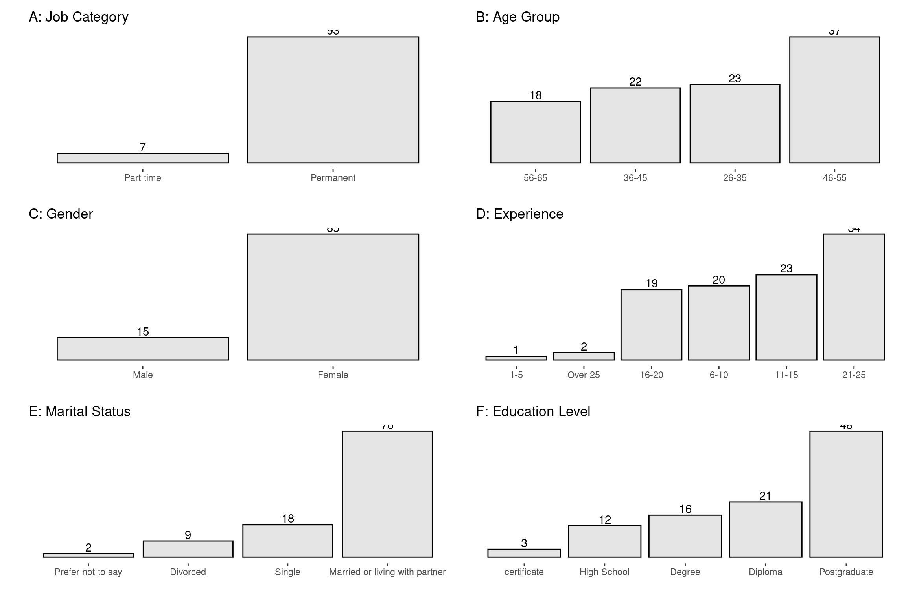
We also examine each of the categories of questions in the questionaire that covered the following areas.
- Motivation.
- Job Satisfaction.
- Working from home.
- Technology.
2.2.1 Motivation
Table () below shows the summary statistics of the responses capturing motivation of employees. On a scale of 1 (strongly disagree) to 7 (strongly agree), most respondents (102) strongly disagreed that they had no time to work when working from home (see the median od the variable motiv_no_time_to_work in the table). The other variables have a similar interpretation.
1 2 3 4 5 6 7
104 106 12 53 26 18 35 | Variable | Mean | SD | Min | Q1 | Median | Q3 | Max |
|---|---|---|---|---|---|---|---|
| motiv_no_time_to_work | 2.957627 | 1.9917424 | 1 | 1 | 2 | 4 | 7 |
| motiv_work_clearly_explained | 6.045198 | 1.2198510 | 2 | 5 | 7 | 7 | 7 |
| motiv_comfortable_working_hours | 6.056497 | 1.5742889 | 1 | 6 | 7 | 7 | 7 |
| motiv_satisfied_career_progress | 4.265537 | 2.0785152 | 1 | 2 | 5 | 6 | 7 |
| motiv_equipment_tools_efficient | 5.268362 | 1.7011125 | 1 | 4 | 6 | 7 | 7 |
| motiv_adequate_working_area | 5.850282 | 1.3349359 | 2 | 5 | 6 | 7 | 7 |
| motiv_interest_what_i_did | 6.370056 | 0.7759169 | 4 | 6 | 7 | 7 | 7 |
| motiv_lighting_ventilation_workplace | 5.830508 | 1.7261778 | 1 | 6 | 6 | 7 | 7 |
| motiv_comfortable_work_environment | 5.855932 | 1.4842445 | 1 | 5 | 6 | 7 | 7 |
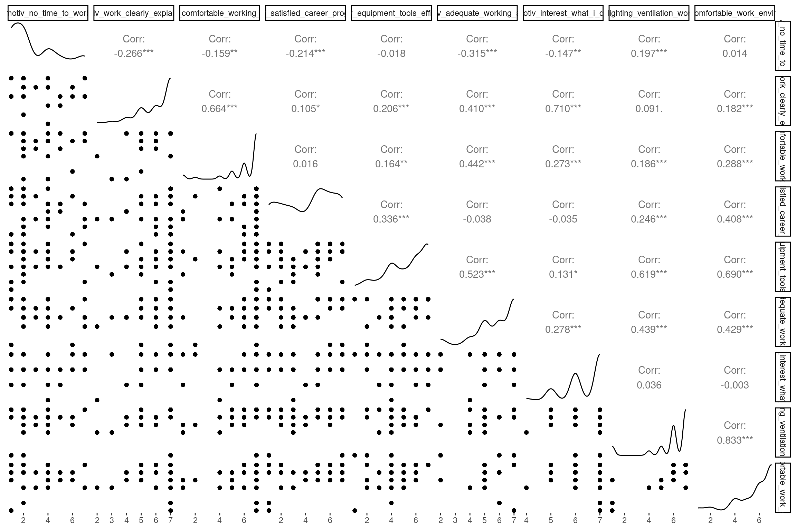
2.2.2 Job satisfaction
Table () summarises the responses capturing job satisfaction. As an example, when the researcher posed the question “My day never seemed to end”, most respondents strongly disagreed, implying a high degree of job satisfaction.
1 2 3 4 5 6 7
106 73 30 73 36 24 12 | Variable | Mean | SD | Min | Q1 | Median | Q3 | Max |
|---|---|---|---|---|---|---|---|
| js_day_seemed_to_never_end | 2.943503 | 1.7819285 | 1 | 1 | 2 | 4 | 7 |
| js_work_disturbed_family_life | 2.954802 | 2.0691151 | 1 | 1 | 2 | 5 | 7 |
| js_work_affected_family_respo | 2.666667 | 1.7235797 | 1 | 1 | 2 | 4 | 6 |
| js_private_life_negative_effect_work | 1.686441 | 0.7969398 | 1 | 1 | 2 | 2 | 4 |
| js_institution_impt_to_me | 5.813559 | 1.3055720 | 2 | 5 | 6 | 7 | 7 |
| js_adequate_opp_to_develop_skills | 5.254237 | 1.7321478 | 1 | 5 | 6 | 7 | 7 |
| js_could_communicate_all_levels | 5.353107 | 1.6360506 | 1 | 5 | 6 | 7 | 7 |
| js_work_affected_private_tasks | 2.853107 | 1.9148751 | 1 | 1 | 2 | 4 | 7 |
| js_postpone_job_tasks_due_to_family_respo | 2.050848 | 1.5744820 | 1 | 1 | 2 | 2 | 7 |
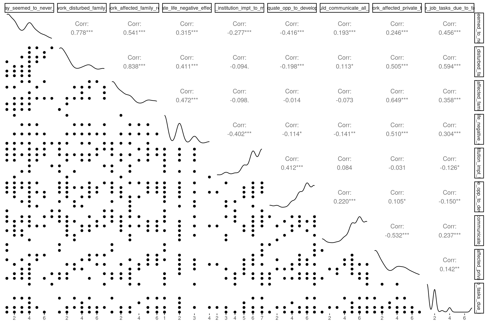
2.2.3 Working from Home
Again, Table () below summarises the responses for employees regarding remote work. Most respondents, for instance,strongly agreed that daily and weekly job objectives were clearly stated.
3 4 5 6 7
15 12 62 110 155 | Variable | Mean | SD | Min | Q1 | Median | Q3 | Max |
|---|---|---|---|---|---|---|---|
| wfh_job_objectives_clear_daily_weekly | 6.067797 | 1.0623253 | 3 | 5.25 | 6 | 7 | 7 |
| wfh_adequate_equipment | 5.500000 | 1.8563878 | 1 | 5.00 | 6 | 7 | 7 |
| wfh_remote_productivity_office_productivity_equal | 6.087571 | 1.5056883 | 1 | 6.00 | 7 | 7 | 7 |
| wfh_work_from_home_can_be_improved | 3.903955 | 2.1254791 | 1 | 2.00 | 4 | 6 | 7 |
| wfh_remote_work_hinders_growth | 1.816384 | 0.9915578 | 1 | 1.00 | 2 | 2 | 4 |
| wfh_online_physical_meetings_equivalent | 6.016949 | 1.5147044 | 1 | 6.00 | 7 | 7 | 7 |
| wfh_remote_work_tech_reliable | 5.960452 | 1.4686973 | 2 | 6.00 | 6 | 7 | 7 |
| wfh_struggle_focus_remote_work | 1.853107 | 1.3780571 | 1 | 1.00 | 1 | 2 | 7 |
| wfh_missed_social_interactions | 3.471751 | 1.9716241 | 1 | 2.00 | 3 | 5 | 7 |
| wfh_prefer_remote_work | 5.516949 | 1.9134223 | 1 | 5.00 | 6 | 7 | 7 |
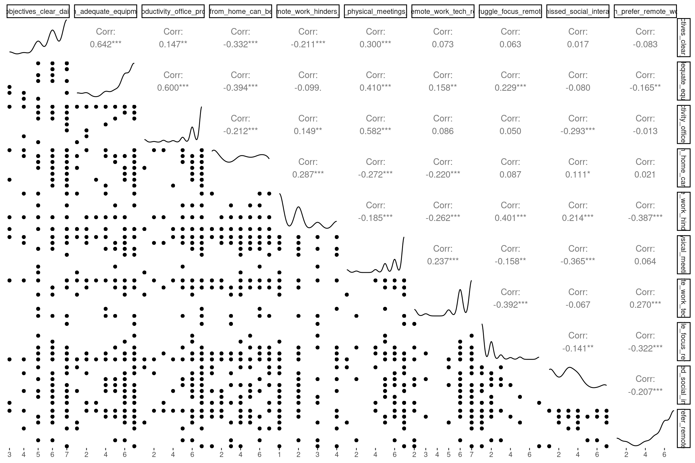
2.2.4 Technology
In this section, I visualize the variables that capture the use of technology by employees while working from home. As an example, most employees disagreed that they had problems communicating with colleagues virtually.
1 2 3 4 5 6
108 106 89 28 8 15 | Variable | Mean | SD | Min | Q1 | Median | Q3 | Max |
|---|---|---|---|---|---|---|---|
| tech_communication_employees_problematic | 2.341808 | 1.281422 | 1 | 1 | 2 | 3 | 6 |
| tech_acess_work_related_info_hard | 1.994350 | 1.385874 | 1 | 1 | 1 | 2 | 6 |
| tech_made_me_miss_impt_info | 1.742938 | 1.000860 | 1 | 1 | 1 | 2 | 4 |
| tech_not_hinder_work | 6.115819 | 1.531771 | 1 | 6 | 7 | 7 | 7 |
| tech_remote_help_available_incase_digital_hitches | 6.098870 | 1.148394 | 1 | 6 | 6 | 7 | 7 |
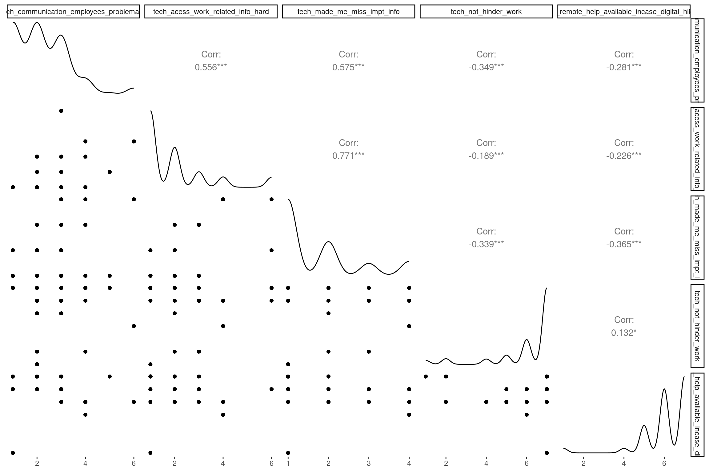
2.3 Data Analysis and Discussion of Results
In this section, we will examine the research questions in greater detail.
2.3.1 Principal Components Analysis
To start with, we create aggregate metrics to capture the four variables;
- Motivation.
- Job Satisfaction.
- Working from Home.
- Technology.
To construct these variables from the responses in the questionaires, we apply Principal Components Analysis (PCA). We label these variables motiv for motivation, js for job satisfaction, wfh for working from home, and tech for technology. In each PCA analysis, we extract the first principal component. This first principal component proxies the corresponding metric in answering the research questions.
The output below shows the contributions of each of the components for motivation. The first principal component constitutes 39% of total variance.
Importance of components:
PC1 PC2 PC3 PC4 PC5 PC6 PC7
Standard deviation 1.8277 1.4235 1.0731 0.94223 0.85027 0.60652 0.49898
Proportion of Variance 0.3712 0.2251 0.1279 0.09864 0.08033 0.04087 0.02766
Cumulative Proportion 0.3712 0.5963 0.7243 0.82291 0.90324 0.94411 0.97178
PC8 PC9
Standard deviation 0.37750 0.33393
Proportion of Variance 0.01583 0.01239
Cumulative Proportion 0.98761 1.00000For job satisfaction, the first principal component constitutes 40% of total variance.
Importance of components:
PC1 PC2 PC3 PC4 PC5 PC6 PC7
Standard deviation 1.8914 1.2912 1.2216 0.92728 0.76842 0.61710 0.5073
Proportion of Variance 0.3975 0.1853 0.1658 0.09554 0.06561 0.04231 0.0286
Cumulative Proportion 0.3975 0.5828 0.7486 0.84412 0.90972 0.95204 0.9806
PC8 PC9
Standard deviation 0.33729 0.24603
Proportion of Variance 0.01264 0.00673
Cumulative Proportion 0.99327 1.00000For the wfh variable the first principal component contributes 29% of the total variability.
Importance of components:
PC1 PC2 PC3 PC4 PC5 PC6 PC7
Standard deviation 1.6820 1.4397 1.1486 0.99965 0.8521 0.81766 0.75583
Proportion of Variance 0.2829 0.2073 0.1319 0.09993 0.0726 0.06686 0.05713
Cumulative Proportion 0.2829 0.4902 0.6221 0.72204 0.7946 0.86149 0.91862
PC8 PC9 PC10
Standard deviation 0.6316 0.55933 0.3194
Proportion of Variance 0.0399 0.03129 0.0102
Cumulative Proportion 0.9585 0.98980 1.0000Lastly, first principal component for technology contributes 52% of the total variability.
Importance of components:
PC1 PC2 PC3 PC4 PC5
Standard deviation 1.6176 0.9380 0.9112 0.68839 0.44671
Proportion of Variance 0.5233 0.1760 0.1660 0.09478 0.03991
Cumulative Proportion 0.5233 0.6993 0.8653 0.96009 1.00000The graphs below shows the contributions of each principal component to the total variability.
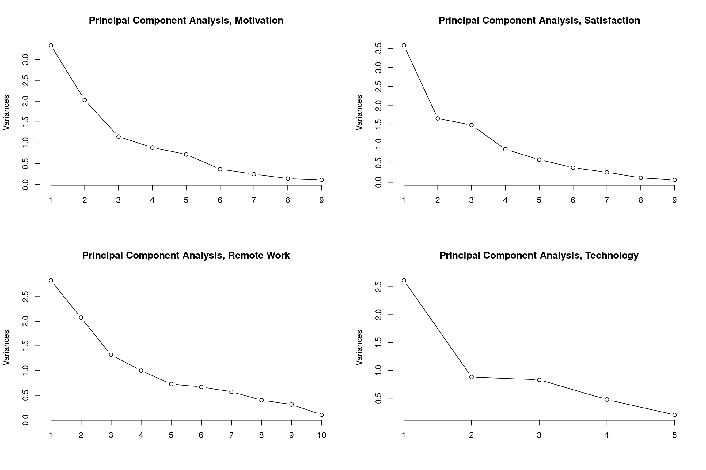
2.3.1.1 Visualizing the First Principal Components
In this section, we examine the correlation between the proxies for motivation, job satisfaction, technology, and working from home. Again, these proxies are the first principal components of the measures for motivation, job satisfaction, working from home and technology computed in the previous section.
Figure () shows a significant correlation between the variables. For instance, there is very high positive correlation between the motivation and job satisfaction on the one hand and technology and job satisfaction on the other. However, there appears to be a non-linear relationship between the variables making the correlations less useful.
2.3.2 Remote work and employee motivation?
Figure () below shows the relationship between employee motivation and working from home. The relationship is negative at the initial levels but turns positive at higher levels. In the regression analysis in section () below, we examine the significance of the relationship between employee motivation and working from home in the presence of other related variables.
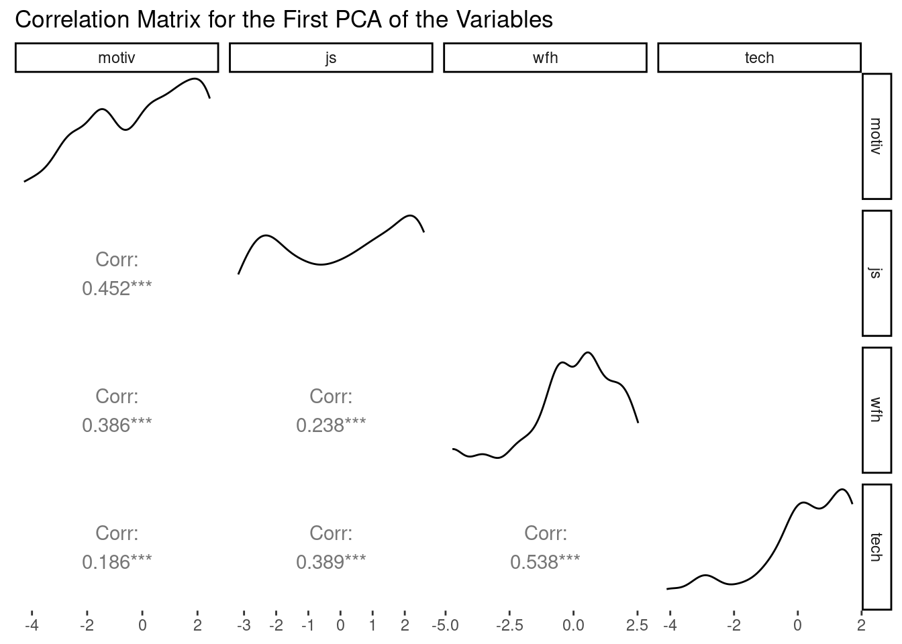
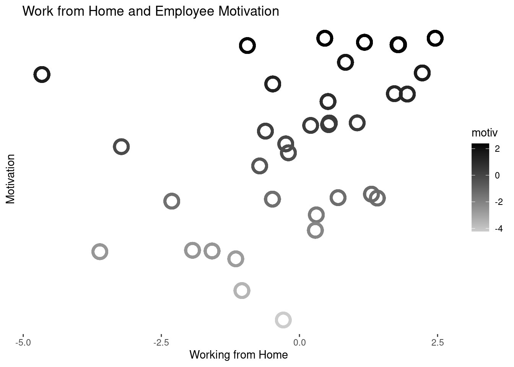
2.3.3 Remote work and and job satisfaction?
Figure () below shows the relationship between job satisfaction and working from home. The relationship is negative at the initial levels but flattens at higher levels. This observation goes against the theory. In the regression analysis in section () below, we examine the significance of this relationship in the presence of other related variables.
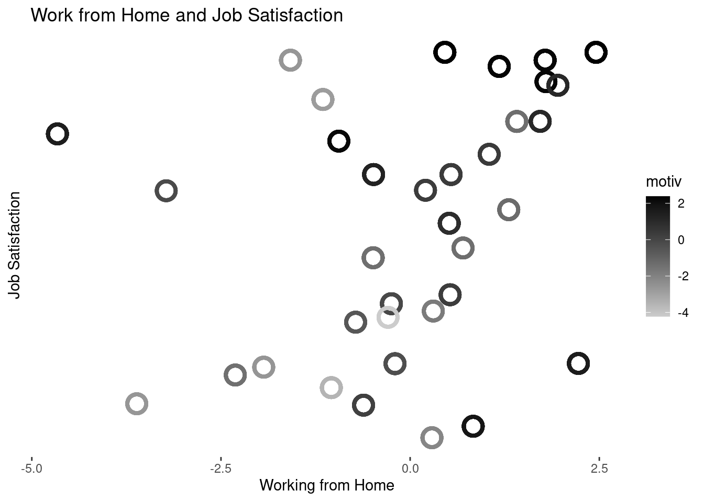
2.3.4 Employee motivation and job satisfaction?
As expected, Figure () below shows the positive relationship between employee motivation and job satisfaction. In line with the theory, higher employee motivation corresponds to higher job satisfaction. Again , we examine the significance of this relationship in the regression analysis section below.
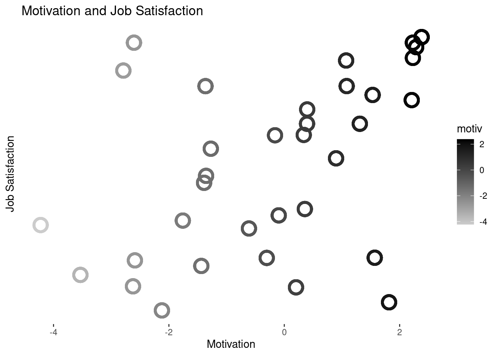
2.3.5 Technological skills, employee motivation and job satisfaction in remote work
Overall, there is a positive relationship between the employee motivation and job satisfaction (see Figure () below). The figure also indicates that employees with better technology skills have higher motivation. However, job satisfaction does not appear to have a significant relationship with the technology. The implication here is that the positive relatonship between the employee motivation and job satisfaction arises from other factors beyond profficiency in technology. We discuss some of these other factors in the regression analysis in the next section.
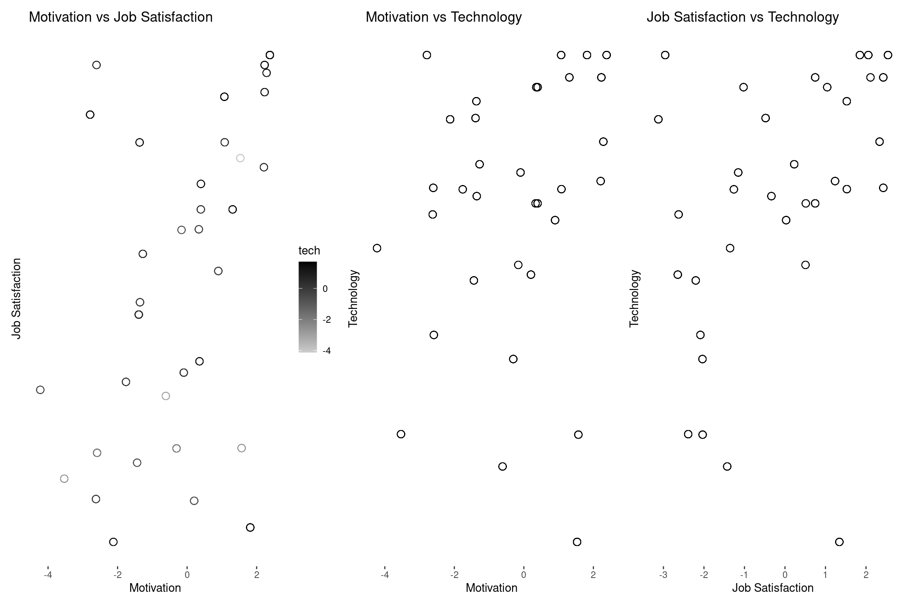
We run a regression analysis of the following form;
\(motivation = \beta_{0} + \beta_{1}job_satisfaction + \beta_{n}controls + error_term\)
Where motivation and job_satisfaction are variables that captures employee motivation and job satisfaction, respectively. The controls include gender, age group, marital status, education level, employment category, experience, and whether or not the employee worked from home. We also include an interaction of technology and job satisfaction. The interaction is the outcome of interest in this section. The summary of the regression analysis is in the table below.
The regression confirms the outcome of Figure () above. While the relationship between job satisfaction and motivation is positive and significant, the relationship between motivation and the interaction of job satisfaction and technology is not. What are the additional variables that affect the levels of motivation among employees?
The regression table shows that the level of motivation among employees is a function of other variables. These variables include working from home (wfh), age group, marital status, education level, experience. Notably, both technology and job satisfaction are not a significant driver of the level of motivation among employees. However, the flexibility to work from home does positively affect the level of motivation.
Divorced employees had a greater motivation than married or single employees in the sample. Employees with certificate level education had less motivation compared to employees with higher levels of education. Part-time employees have a greater motivation motivation than parmanent employees which is a suprising outcome from the analysis.
Compared to employees with 1-5 years of experience, employees with experience between 6 and 20 years have a greater motivation. On the other hand, employees with experience of 21-25 years have significantly less motivation. Critically, working from home has a significant relationship with employee motivation. Hence, management could explore mechanisms to allow employees to choose remote work where possible.
Note that we do not include age in the regression as it is highly correlated with experience. The regression disagnostics plot in Figure () indicates a mild level of multicollinearity. However, the model is significant with the independent variables explaining 77% of the variation in the dependent variable with a significant F-statistic.
Call:
lm(formula = wfh ~ js + tech + age_group + motiv + gender + marital +
education + employment_category + js:tech, data = final_data)
Residuals:
Min 1Q Median 3Q Max
-2.76743 -0.46464 -0.03794 0.47340 1.91201
Coefficients:
Estimate Std. Error t value Pr(>|t|)
(Intercept) 1.80562 0.46664 3.869 0.000131 ***
js -0.26055 0.03522 -7.397 1.11e-12 ***
tech 0.46223 0.03887 11.891 < 2e-16 ***
age_group36-45 -0.81639 0.17713 -4.609 5.75e-06 ***
age_group46-55 -0.69507 0.16187 -4.294 2.30e-05 ***
age_group56-65 -1.15367 0.22512 -5.125 5.03e-07 ***
motiv 0.52343 0.03860 13.559 < 2e-16 ***
genderMale -1.29542 0.19181 -6.754 6.33e-11 ***
maritalMarried or living with partner 0.17813 0.19691 0.905 0.366327
maritalPrefer not to say -0.62620 0.43839 -1.428 0.154098
maritalSingle 1.03808 0.22778 4.557 7.26e-06 ***
educationDegree -1.78165 0.36787 -4.843 1.95e-06 ***
educationDiploma -1.43866 0.37306 -3.856 0.000138 ***
educationHigh School -0.45887 0.39408 -1.164 0.245079
educationPostgraduate -0.97125 0.35378 -2.745 0.006368 **
employment_categoryPermanent -0.53026 0.25624 -2.069 0.039273 *
js:tech 0.28503 0.02399 11.882 < 2e-16 ***
---
Signif. codes: 0 '***' 0.001 '**' 0.01 '*' 0.05 '.' 0.1 ' ' 1
Residual standard error: 0.9477 on 337 degrees of freedom
Multiple R-squared: 0.6969, Adjusted R-squared: 0.6825
F-statistic: 48.43 on 16 and 337 DF, p-value: < 2.2e-16No documentation for ‘stargazer’ in specified packages and libraries: you could try ‘??stargazer’
| Dependent variable: | |
| wfh | |
| js | -0.261*** |
| (0.035) | |
| tech | 0.462*** |
| (0.039) | |
| age_group36-45 | -0.816*** |
| (0.177) | |
| age_group46-55 | -0.695*** |
| (0.162) | |
| age_group56-65 | -1.154*** |
| (0.225) | |
| motiv | 0.523*** |
| (0.039) | |
| genderMale | -1.295*** |
| (0.192) | |
| maritalMarried or living with partner | 0.178 |
| (0.197) | |
| maritalPrefer not to say | -0.626 |
| (0.438) | |
| maritalSingle | 1.038*** |
| (0.228) | |
| educationDegree | -1.782*** |
| (0.368) | |
| educationDiploma | -1.439*** |
| (0.373) | |
| educationHigh School | -0.459 |
| (0.394) | |
| educationPostgraduate | -0.971*** |
| (0.354) | |
| employment_categoryPermanent | -0.530** |
| (0.256) | |
| js:tech | 0.285*** |
| (0.024) | |
| Constant | 1.806*** |
| (0.467) | |
| Observations | 354 |
| R2 | 0.697 |
| Adjusted R2 | 0.683 |
| Residual Std. Error | 0.948 (df = 337) |
| F Statistic | 48.432*** (df = 16; 337) |
| Note: | p<0.1; p<0.05; p<0.01 |
htmltools::includeHTML("mskodongo.html")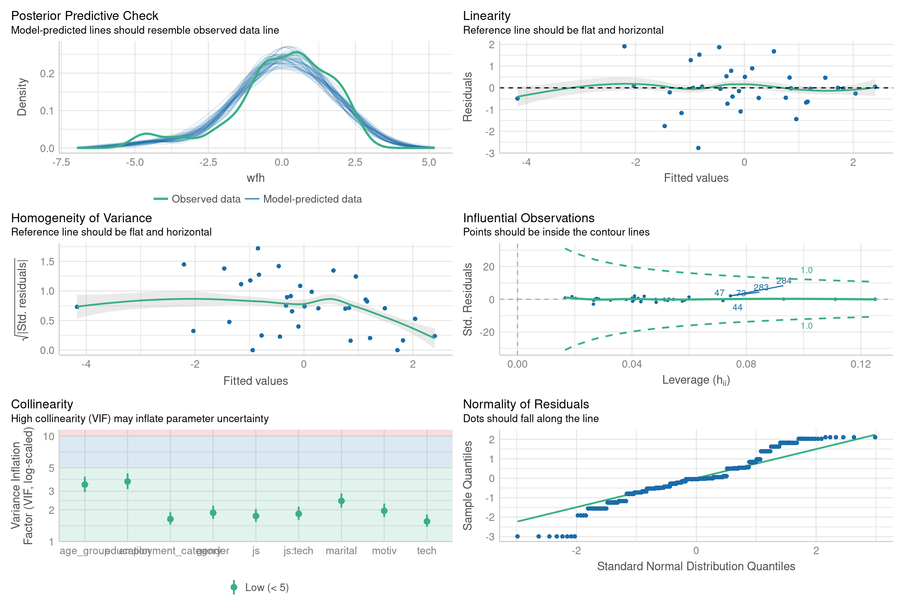